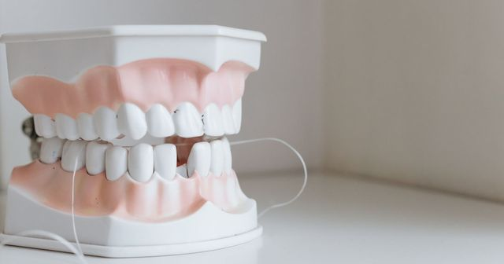

Blog : parodontologie et implantologie
Des articles d'information pour les patients sur les maladies des gencives et les implants dentaires. Chaque article s'appuie sur des recommandations de la Haute Autorité de santé et de sociétés savantes, citées en fin de page.
Ces articles informent : ils ne remplacent pas une consultation. Une question sur votre situation personnelle relève d'un examen. Un nouvel article est publié chaque semaine.
Les premiers articles seront publiés prochainement.
Les articles

Prothèse sur implant : vissée ou scellée ?
Deux modes de fixation comparés : survie, complications, ciment résiduel.

Péri-implantite : reconnaître, prévenir, traiter
Mucosite et péri-implantite : définitions, prévention et traitements recommandés.

Peut-on poser un implant après une parodontite ?
Traiter d’abord, stabiliser, suivre : ce que demandent les recommandations européennes.

Implants dentaires : que disent les études sur la survie à dix ans ?
Taux de survie à dix ans : ce que les chiffres disent, et leurs limites.

Implant dentaire : le parcours de soins évalué par la HAS
Trois phases : avant, pendant et après la pose, et où en est le remboursement.

Après le traitement parodontal : pourquoi la maintenance compte
Visites régulières, brossettes interdentaires : ce que recommande la Fédération européenne après le traitement.

Parodontite et santé du cœur : ce que dit le consensus européen
Association établie, prévention encore non démontrée : l’état des connaissances.

Parodontite et diabète : un lien dans les deux sens
Ce que dit le consensus international sur la parodontite, le diabète et le traitement des gencives.

Le surfaçage radiculaire : ce que recommande la Fédération européenne de parodontologie
Le geste central du traitement de la parodontite : ce qui est recommandé, et ce qui ne l’est pas.

Traiter une parodontite : les quatre étapes recommandées en Europe
Du contrôle de la plaque aux soins de soutien : le chemin recommandé en quatre étapes.

La parodontite : comprendre la maladie des gencives et de l’os
Stades, grades, signes d’alerte : comment la maladie est définie et repérée.

Gencives qui saignent : comprendre la gingivite
Une inflammation réversible de la gencive : ses signes et ce que l’on peut faire.

Antibiotiques chez le dentiste : ce que recommande la HAS en 2026
Un antibiotique n’est pas un réflexe : ce que dit la HAS pour les gencives et les implants.